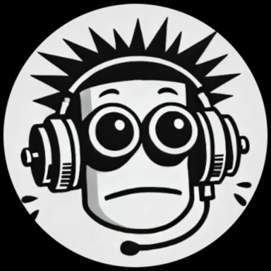

Spoken French & GCSE Listening
An iPhone app that trains you to understand French as it is actually spoken. A few minutes a day, by ear, at native speed.
In beta on TestFlight, for iPhoneEvery lesson is spoken by native voices. You hear a sentence before you read it, and ear training works on the sounds English speakers tend to merge.
Each day is a short set: listen, learn, recall, fix. Reviews that are due come before anything new, so missing a day never turns into a backlog.
A fresh news edition every morning, written for learners from stories confirmed by independent sources, so the French you practise is about the real world.
Invite family and friends into a circle and learn alongside each other. Free to start, with a Premium subscription for the full course.
Podyglot has a GCSE mode for the CCEA French listening paper. It follows the board’s own Foundation vocabulary list, day by day, until every word on it has been heard in context.
Practice questions are derived from the board’s real past papers and checked by hand, one by one, before they reach a learner. A mock listening exam runs on the board’s own clock, so the real one holds no surprises.